Why Shiraz?
Shiraz, Iran's Cultural Heartland
Shiraz, Iran’s cultural heartland, has ancient roots. Its name evolved from "Tiraziš," found on 4,000-year-old Elamite tablets. The city reached its golden age in the 18th century when Karim Khan Zand made it his capital, adorning it with magnificent structures like the Arg fortress and Vakil Bazaar.
Long revered as a center for art and learning, Shiraz is most famously the city of poets. It is the cherished home and final resting place of the legendary Persian poets, Hafez and Saadi. Their tombs draw admirers from across the globe, cementing its timeless legacy as the soul of poetry.
TOP SIGHTS
Must-See Sights in Shiraz
(Narenjestan-e Ghavam)
Qavam House
The Qavam House, also called Narenjestan-e Ghavam, is a stunning Qajar-era mansion in Shiraz. Famous for its magnificent mirror work and courtyard filled with fragrant sour orange trees, it's a prime example of Persian aristocratic elegance.
 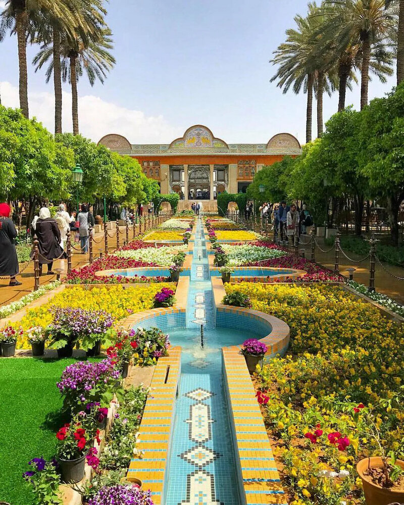
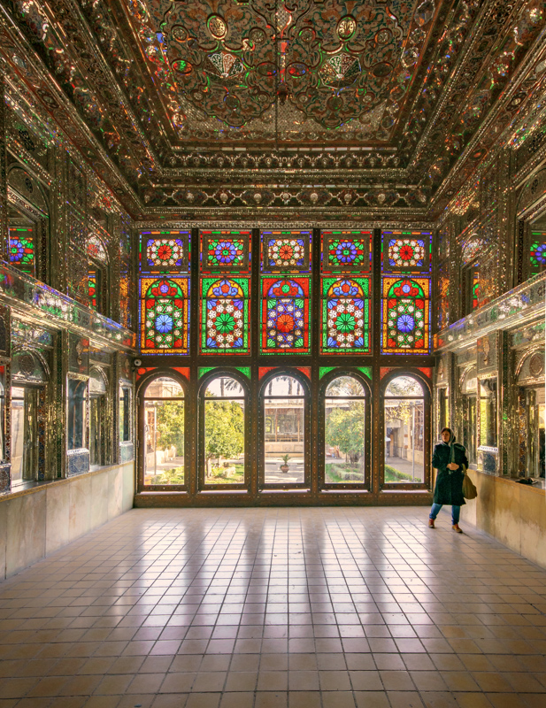
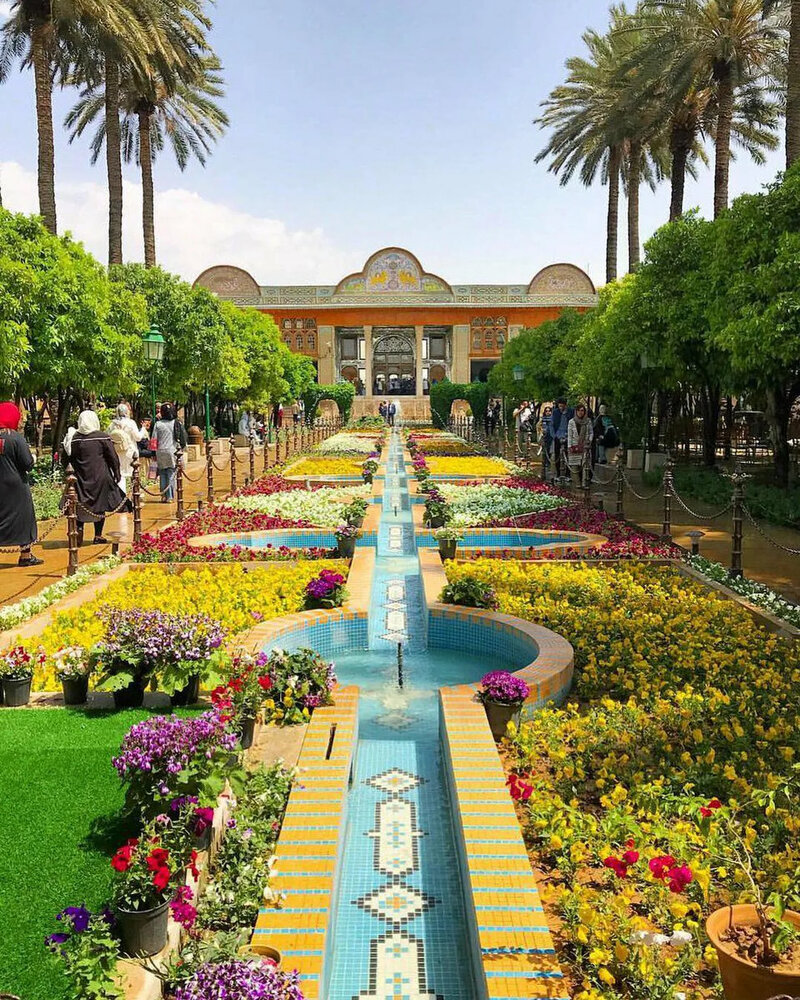
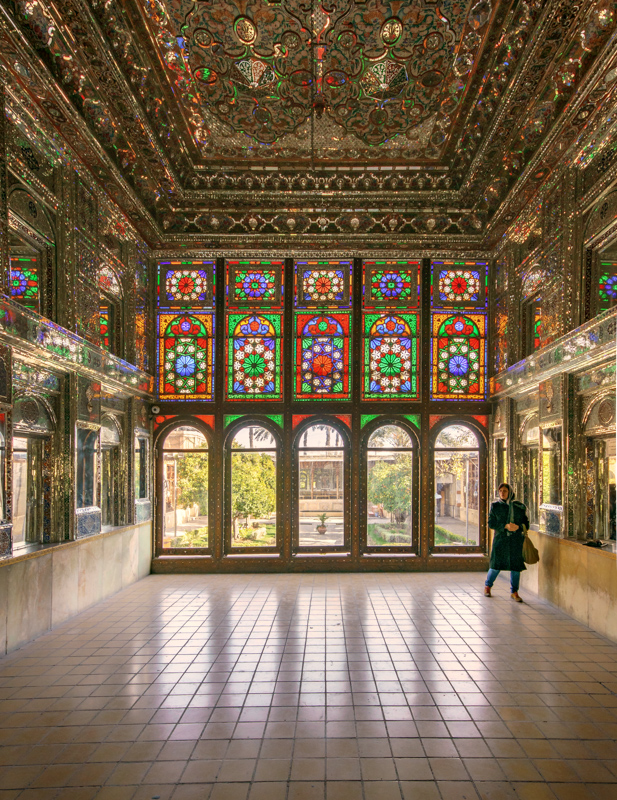
,%20Shiraz,%20Iran%C2%A0.The%20building%20preserves%20the.jpg)
(Nasir al-Mulk Mosque)
Pink Mosque
The Nasir al-Mulk Mosque, or Pink Mosque, is a dazzling Qajar-era (19th Century) structure in Shiraz. It’s famed for its stunning stained-glass windows that project a vibrant kaleidoscope of colors onto the prayer hall, a unique and magical spectacle in Persian architecture.

 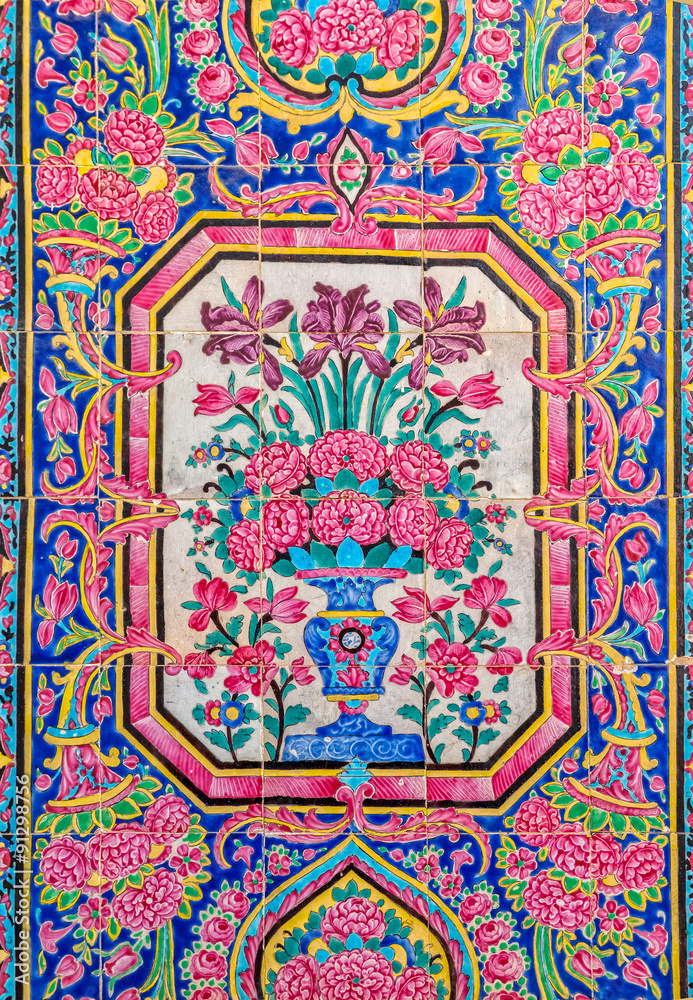
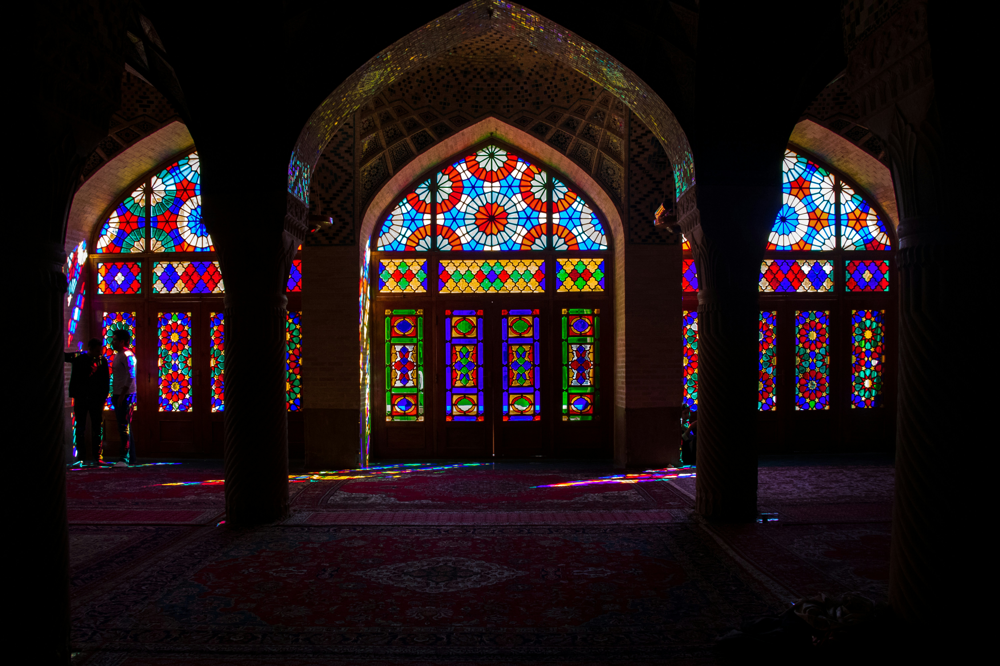
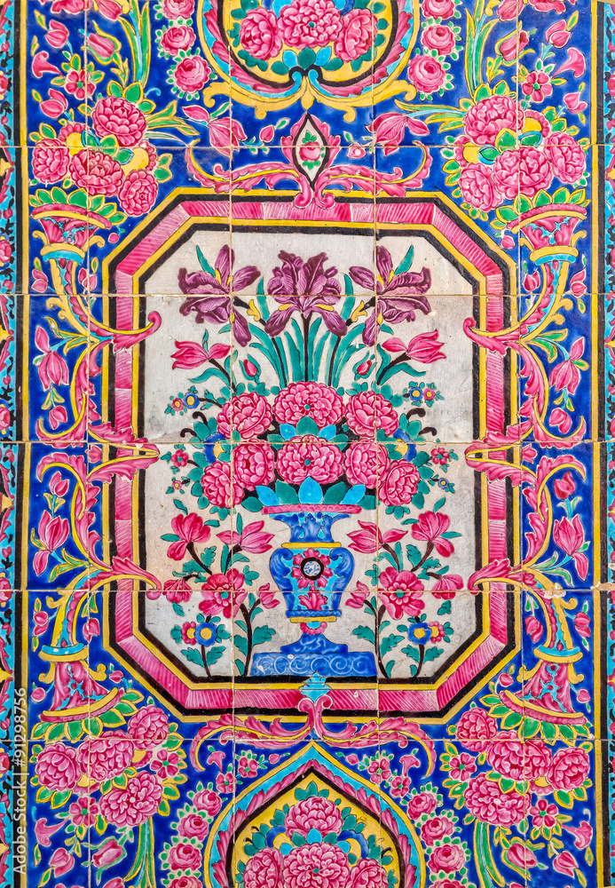
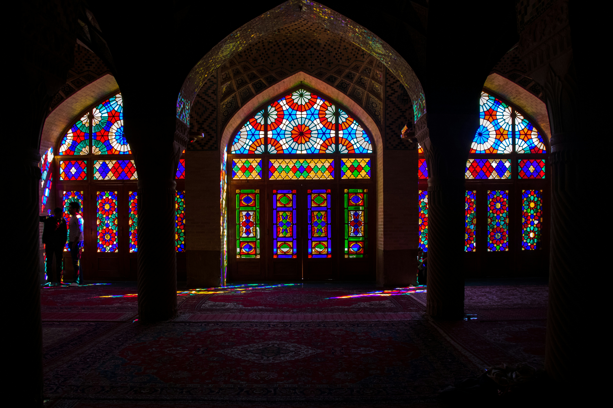
(Hafezieh)
Hafez Tomb
The Tomb of Hafez (Hafezieh) in Shiraz honors Hafez, Iran's most cherished lyric poet. Known as the "tongue of the unseen," his shrine is set within a beautiful Persian garden. It remains a vital spiritual and cultural pilgrimage site, where visitors read his timeless poems for guidance.
(Takht-e Jamshid)
Persepolis
Persepolis (Takht-e Jamshid) is the monumental ruined city near Shiraz, once the ceremonial capital of the Achaemenid Empire (550–330 BC). This UNESCO World Heritage Site features colossal columns and magnificent bas-reliefs, standing as a grand symbol of ancient Persian civilization and power.
 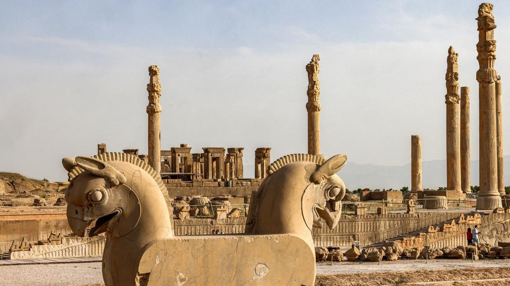
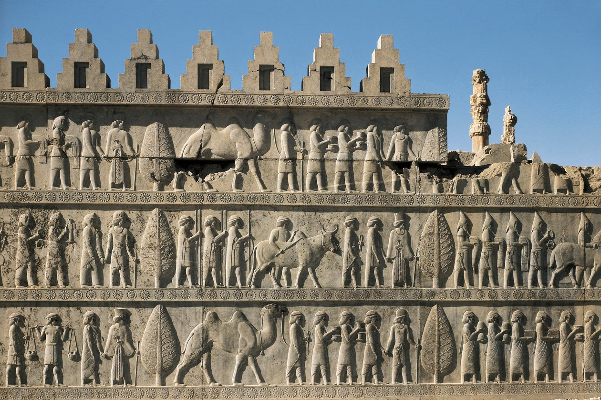
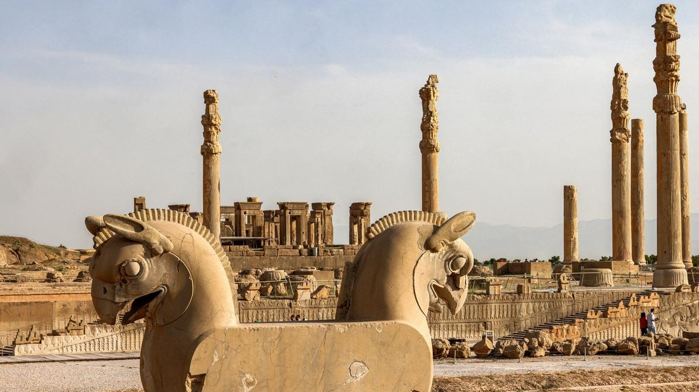
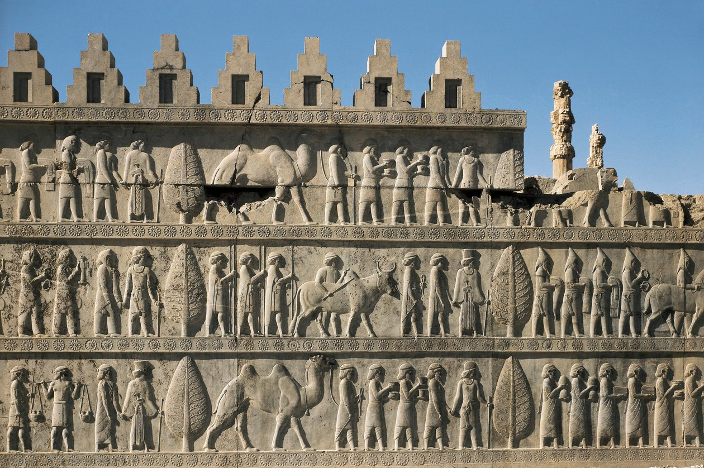